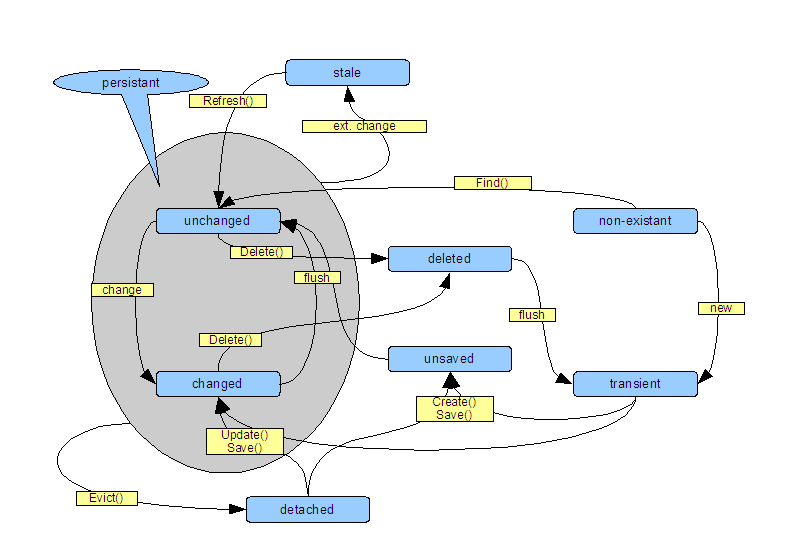

Persistency Lifecycle
More important than knowing how to map ActiveRecord-Classes is knowing how to use them. The underlying NHibernate is mostly abstracted by ActiveRecord, however there are basic concepts about NHibernate persistence knowledge of is required to use Castle ActiveRecord.
Understanding Sessions
NHibernate uses the concept of a session. Castle ActiveRecord abstracts using the session by doing the session management for the using code, but the session concept is necessary to grasp the concepts behind object persistence with NHibernate and Castle ActiveRecord.
A session is a unit of work boundary of NHibernate. Objects that are connected to a session, will be persisted to the database specified in the session.
A session will not write to the database everytime something is changed. In order to achieve better performance, database access is usually delayed until the last possible moment. This avoids unnecessary database calls, i. e. when multiple fields of a persistent objects are changed within a session. This synchronization with the database is called flushing.
Sessions can use transactions that offer the ability to create all-or-nothing change sets that span multiple flushes. Such a transaction is distinct from a database transaction, although it uses the latter internally.
The Attributes of Objects
With respect to object-relational mapping there are different attributes of objects to look at. Each of these attributes describes a certain aspect of an object that is important to persistence. These attributes will be put together into a lifecycle consisting of several states that are defined by combining the attributes.
Most simply, an object can be existant or non-existant. Since there will be a lot of objects that live only as database records, but not in memory, non-existant is an important object state in O/R. Another naming convention differs between activated and passivated objects, but this makes only sense to persistant objects.
Regarding persistence, an object can be transient or persistant. A persistent object is backed by a database record, a transient object is not.
In any session, an object can be attached or detached. An attached object is connected to the session. It will be monitored by that session and saved to the database.
An object can be unchanged or changed. A changed object's state has been altered and is not synchronized to it's database record if it is persistant.
Entity States
The states presented here deal with entities. The word entity is used here to describe the combination of object and database record.
| State | Description |
|---|---|
| Non-existant | The entity does not yet exist, neither in memory nor in the database. |
| Transient | The entity has been created and lives in memory. It has no connection to a database record because it either wasn't saved to the database before or it has been already deleted. |
| Unsaved | The entity has been created and lives in memory. There is not yet any databased record associated with it, but the creation of the record has already been scheduled. |
| Persistant | The entity lives both in memory and at the database. |
| Unchanged | A persistant entity that has no unsaved changes to its state. |
| Changed (Dirty) | A persistant entity that has unsaved changes to the objects internal state. The next time, changes are sent (flushed) to the database, the changes will be written to the associated database record, synchronizing the objects internal state with the database record. |
| Detached |
A persistant entity is normally attached to a session. The session tracks changes to the
entity and takes care for flushing that changes back to the database. If changes should not
be saved or the object shall leave the scope of its session, it can be detached from the
session. The entity is still persistant, but the object is temporarily transient. It can be
reattached to another session. A common examples for detaching and reattaching is keeping an object stored in an ASP.NET session store and save changes back when the object is back in a consistant state several pages later. This technique is used when creating wizard-like web pages for supporting complex workflows. |
| Deleted | The entity is persistant, but the database record is scheduled for deletion. The object may still exist in memory, but it will become transient after the next flush. |
| Stale | When a persistant entity's database record has been changed by another session, changes of the objects internal state cannot be synchronized anymore with the database. This entity's state is called stale. |
State Transitions
The figure below shows the state transition diagram.
The transitions will be explained below, when stepping through common usage scenarios for ActiveRecord. In the diagram, all transitions that must be explicitly triggered by the user, are methods of the entity type. These transitions are capitalized and postfixed with parentheses.
The other transitions are defined in the table below:
| Transition | Description |
|---|---|
| new | Creation of an entity, either by directly constructing or by using a factory. |
| change | Change of an entity's internal state by any method,i.e. calling business logic or changing attributes. |
| flush | A flush either initiated by the code itself by calling scope.Flush() or XxxAndFlush or by the session. The latter happens for example when the session is requested to perform queries or has to load an entity. |
| ext. change | External changes are when another sessions change an entity's database record. |
Common Scenarios
This section deals with common scenarios that use ORM to persist changes with different requirements. The scenarios show how the different states of entities can be used to satisfy the special limitations of the scenario.
Throughout the scenario discussion, the necessary state transitions are explained when they first appear. It is therefore advisable to read the scenarios completely, even when looking for how to support only one of the application types.
CRUD
This scenario discusses the basic usage of persistant entities. Although there is not much business logic involved, almost all applications contain code to Create, Read, Update and Delete entities.
CRUD functionality is commonly used for administration purposes, allowing operations to rectify data when an error is discovered in an application that leads to data corruption. Other types of applications consist mostly of CRUD screens. Among these, most prominent are MS Access databases. If such an application has to be replaced with an ActiveRecord application, the biggest part of the application will handle CRUD.
At first, an entity must be created. An object of the entity class is instantiated. This object is now transient. Its properties and fields will be populated.
To store the object in the database, either the method entity.Save() or entity.Create() must be called. This call tells ActiveRecord that the entity should be persisted. It isn't yet, but creation is scheduled for the next flush. This state is called unsaved.
When the session flushes, all changes are written to the database. This includes creating database rows for unsaved objects. After the flush, the entity is persistent and unchanged, since it has been just synchronized with the datastore.
Depending on the mapping of the primary key, it is possible that ActiveRecord hits the database immediately after calling Save() or Create(). This is the case if a native primary key (for example IDENTITY in SQLServer) is used.
This action will insert the record but not perform a full flush and can lead to unexpected results. It is therefore recommended not to use native primary keys. Code that is cluttered with explicit calls to scope.Flush() heavily suffers from native primary keys.
More information on mapping primary keys is found in the section about primary key mapping.
Now that the entity is created, it must be shown to the user, either with other entities as part of a list or aggregation or on its own. If the object is not already present in the session because it has just been created, it must be loaded from the database. This is the R in CRUD.
Fetching entities from the datastore is accomplished by calling Entity.Find(key). Other methods read more than one entity and allow querying for specific objects. All of these methods are static methods of the entity class and start with Find.
The Find method reads the data from the record and creates an object, populating it with the data read from the database. This method is persistant and unchanged. The object can now be displayed to the user and changed.
Supposed that the object has been displayed with widgets that allow updating its properties, the user can change the object by editing the data. After the user submits the form in a web application, the data is sent back to the server, starting the U in CRUD.
The server has just started a new session with the new request (this is strongly recommended). It will fetch the entity from the database, and the object is created and unchanged. The server process now changes the objects properties according to the data submitted by the user. The objects state will change from unchanged to changed. When the session flushes, the changes will be synchronized automatically with the database record. There is no need to call Save() or Update() (details are given below).
It is also possible but not recommended to build a transient object from the screen's data and call Save() or Update() to persist the object. This means that one Select is avoided, but it works only if all data is present in the screen or request. If the entity is changed later, there might be data loss, if the editing screen is not updated!
The last operation in CRUD is Deletion. There are two possibilities for deletion: The entity can be loaded and then entity.Delete() is called. The other possibility is calling Entity.Delete(key). The latter deletes the entity from the database without loading it into memory before.
The entity now enters the deleted state and will be removed from the database when the session flushes. If an object has been loaded into memory before, its state will be deleted after calling Delete(). After the flush the entity is transient again. If it is planned to resave the object again, its primary key property must be either reset to the unsaved value or Create() must be explicitly used for saving.
Wizards and Workflows
Wizards and workflows have one characteristic in common: Entities are edited over a series of screens and over multiple sessions or unit of works. The entity is valid before the editing process starts and after it has ended, but the data is normally not valid in between.
Regardless of the actual type of application, the scope of a unit of work has to be considered carefully. All changes to a database should be part of unit of work. In web applications this is obviously a single request. Rich clients (Win32, Windows Forms or WPF applications) have better control over the application lifecycle, but they do also profit from carefully defined units of work.
To support this type of operations, the entity in question must be exempted from synchronization with the database record before its state is valid again. This also allows to save all changes from the workflow in a single operation, keeping the entity consistent.
This operation is called detaching. After it has been loaded with Entity.Find(), the object can be detached by calling scope.Evict(entity). The entity will be removed from the session cache which is responsible for determining whether an entity is changed and for synchronizing entity state.
The detached object must be saved internally by the application, for example in the HttpSession-cache. During the process, parts of the object are changed and it may become temporary invalid by these changes. After the process has completed, the object can be reattached to another session by calling entity.Save() or entity.Update(). The changes will be written back to the database when the session flushes.
Concurrent Editing
A scenario that only few programmers plan with but all should be prepared to, is concurrent access to entities. There are but a few applications that are used by only a single user. Most applications are used by tens, hundreds, thousands or even more users concurrently.
The consequence is that the developer has to prepare for an entity being edited from multiple users at the same time. These preparations include choosing a locking strategy and a strategy from recovering from concurrent change.
Theoretically, one can choose to use pessimistic or optimistic locking. When locking pessimistically, all changes to a record are disallowed when it is edited by another user already. Optimistic locking uses version numbers or time stamps to detect changes to a record before saving. That means that the object can be edited by multiple users simultaneously, but the users are only allowed to save the record when it has not changed in between by other users.
ActiveRecord supports pessimistic locking by using serializable transactions, although it is most often not suitable to the application. Application types that are inherently stateless, like web applications should never use pessimistic locking.
Optimistic locking can be implemented with special fields in the ActiveRecord classes. See the section on using Version and Timestamp attributes for further information.
This scenario resembles CRUD, but it is now assumed that an optimistic locking strategy is used and that there are multiple users editing an entity simultaneously. In this example, both John and Paul work with the same entity.
Paul opens the page for editing and walks away from his workplace to fetch coffee. John opens the entity meanwhile and edits it. He saves his changes while Paul is talking to a coworker with the coffee in his hand.
Now Paul returns. His page still displays the old values before John's changes. Paul edits the entity and wants to save it. Now, what should happen. Paul made his changes based on an outdated version of the entity. If this is not checked, Johns changes are completely lost, even if Paul edited only data that John didn't change.
The problem in this case is that Paul's object is stale. ActiveRecord can detect the stale state by using a version number or a timestamp property within the entity. If for example a version number had been used, ActiveRecord would have tried to overwrite only the record with Paul's primary key and version number. The object would have not been updated and the database would have reported a row count of 0. ActiveRecord would have known by this that the object is in a stale state and have thrown an exception.
ActiveRecord guards against overwriting changes in this case, but it doesn't provide any measures to recover from the situation. The client code has to decide itself how the situation must be handled. A common strategy is to show the user both the updated and his own version and let him decide which information to save.
Save, Create and Update
To Save Or Not To Save
Many users believe that Update() has to be used to notify ActiveRecord that an entity has changed. This is only partly true. When ActiveRecord is used without a SessionScope changes must be saved by calling Save() or Update(). This is no contradiction to the state model above but rather a special case. When no scope is used, each session spans only the actual call. Consider the following code:
Blog blog = Blog.FindFirst();
blog.Name = "new Name";
blog.Save();
Immediately after the blog object has been created, the session ends. The object is now de-facto detached. After the change, Save() is called. The object is attached to a new session and immediately flushed because the session ends before the call to Save() returns.
If a SessionScope or a TransactionScope is used, the situation is different:
using (new SessionScope()) { Blog blog = Blog.FindFirst(); blog.Name = "new Name"; // blog.Save(); // Unnecessary }
Now the object is attached to a session after being created, that won't end until the scope is disposed. Because of this, the object is flushed without a call to Save() or Update().
SessionScopes are sometimes used implicitly, for example in MonoRail web applications with the recommended session-per-request-pattern. The session scope is then created transparently at the begin of the web request and disposed immediately before the response is sent to the user.
Since both type of scopes can be nested, it is recommended to always use scopes. This guarantees that the behaviour of for example services that use ActiveRecord is always consistent, no matter whether used from a batch job or from a web application.
When to call Save or Create/Update
The Create() and Update() methods are used when an entity has a natural primary key. In this case, ActiveRecord cannot infer whether to INSERT or UPDATE by looking at the primary key of the entity, thus it has to be told explicitly. If surrogate keys are used, ActiveRecord knows by looking at the key whether the entity exists at the database. In this case, Save() is sufficient to persist a transient entity.
Found an error? Something inaccurate? Help us improve the documentation
Generated by Castle Anakia.
Sponsored by  Castle Stronghold.
Castle Stronghold.